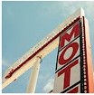

ABOUTME MYWORK CONTACT
I SAW THE SIGN
and it opened up my eyes.One of my favourite things to do is to capture the american nostalgis of signage. They tell us where we're going or where we've been. They express a mood or saying can even just be a shape. But it's the vintage, neon, and big light bulbed signs that say so much more. They aren't just your average square shapes with letters on it.Some actual thought and planning went into the making of the sign.Oh and the lost are of advertising with nneon signs that dispaly motion is always a fun find! Such a lost art in my opinion.LED just hurts eyes-doesn't it?

 Neon on brick |
Classic enter sign |
Message in garage |
& Your point |
Which way? |
 Vintage big bulbed motel sign |